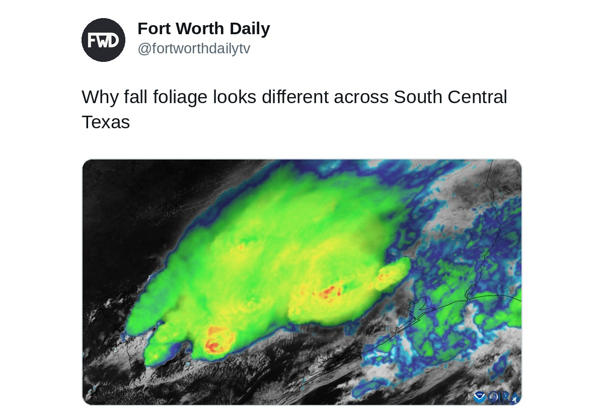
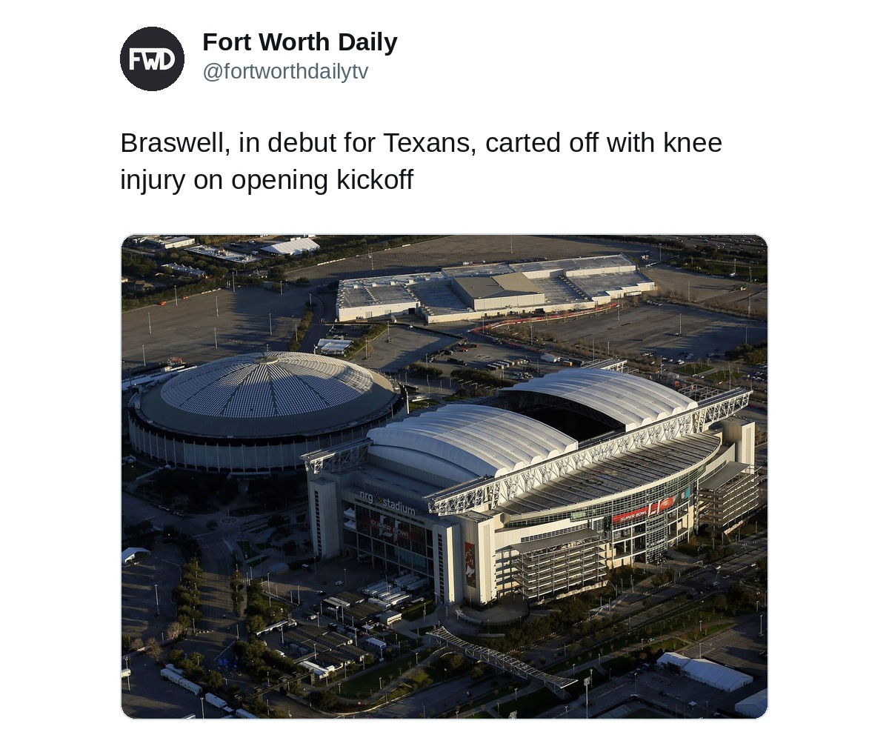

WATCH: Fort Worth Science and History Museum membership can get you savings at other museums
Video: WFAA on YouTube
🔗 Link post: Facebook will render the outlet's own preview photo
https://www.youtube.com/watch?v=ZtuZ-nKRsLg
👍 ❤️ 😮 ✅ written to disk (dry run)
story + scoring
{
"source": "WFAA",
"kind": "video",
"score": 0.9679,
"relevance": 2,
"url": "https://www.youtube.com/watch?v=ZtuZ-nKRsLg",
"image_license": null,
"image_credit": null
}Fall colors vary across South Central Texas, and the combination of cooler temperatures and geography helps determine where vibrant foliage develops.

👍 ❤️ 😮 ✅ written to disk (dry run)
story + scoring
{
"source": "KENS 5 San Antonio",
"kind": "rss",
"score": 0.3888,
"relevance": 2,
"url": "https://www.kens5.com/article/weather/weather-works/why-fall-foliage-looks-different-south-central-texas-leaves-weather/273-48d10edf-15bb-4774-8305-16720ee045d6",
"image_license": "wikimedia-cc",
"image_credit": "Photo: GOES imagery: CSU/CIRA & NOAA via Wikimedia Commons (Public domain)"
}Texans defensive end Chris Braswell suffered a serious-looking knee injury on the opening kickoff of Thursday night's game against the Colts. As the ball was being returned by the Colts, Braswell collided with Indianapolis defensive end Caden Curry and his leg buckled, sending him down to the ground immediately.
A medical cart came out for Braswell, and payers surrounded him while an air cast was placed on his right leg.

👍 ❤️ 😮 ✅ written to disk (dry run)
story + scoring
{
"source": "ESPN NFL",
"kind": "rss",
"score": 0.3055,
"relevance": 2,
"url": "https://www.espn.com/nfl/story/_/id/50536083/texans-lose-chris-braswell-serious-looking-knee-injury",
"image_license": "wikimedia-cc",
"image_credit": "Photo: https://www.cbp.gov/ via Wikimedia Commons (Public domain)"
}